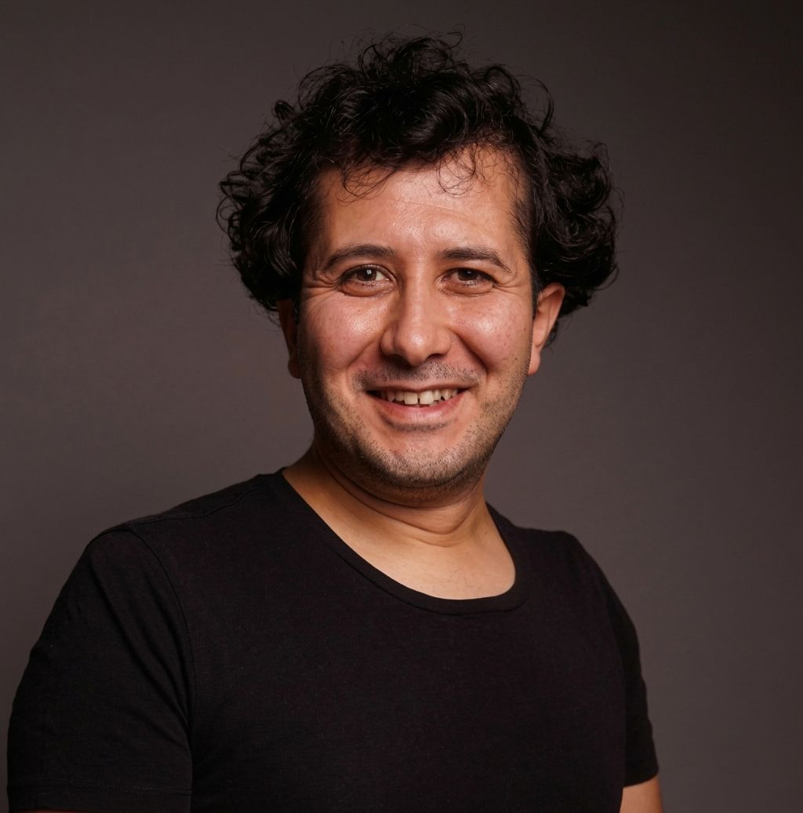

Associate Professor of Linguistics
Hi! I am an associate professor in the Department of English Linguistics in the Faculty of Letters at Hacettepe University. As a sociolinguist, my primary interest is in the social meaning-making process visible through language variation. Related to this, I am interested in phonetics, phonology, language variation and change, and language ideology. I received my MA and PhD from the Department of English Linguistics at Hacettepe University, and I work as an associate professor in the same department.
Linguistics Workshop
Türk Eğitim Vakfı İnanç Türkeş Özel Lisesi, Sosyal Bilimler Çalıştayı 2026, Gebze, Kocaeli, Türkiye
Ünlü formantları bağlamında dil değişkenliği ve toplumdilbilim
En. Language variation and sociolinguistics in the context of vowel formants
Çevrim İçi Dil Konferansları by Türk Dil Kurumu
Yabancı sözcüklere önerilen Türkçe karşılıkların kabulünü belirleyen sesbilimsel ve biçimbilimsel etmenler üzerine bir inceleme
En. An investigation into the phonological and morphological factors determining the acceptance of proposed Turkish equivalents for foreign words
39th National Conference on Turkish Linguistics, Çukurova University, Adana, Türkiye
Scholarly V-card | Use this template